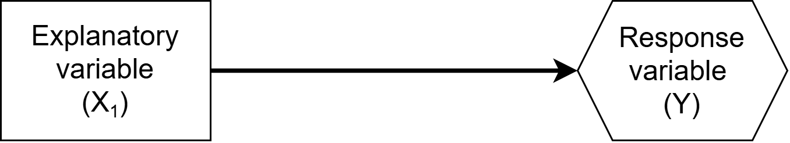
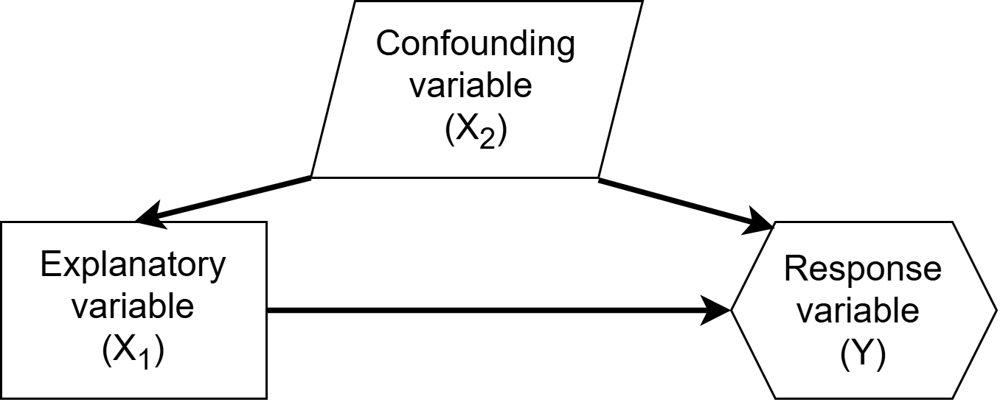
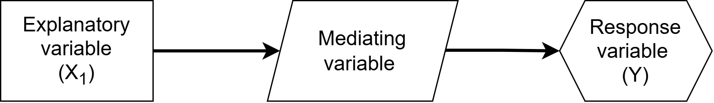
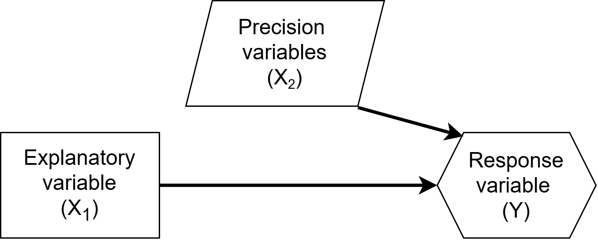
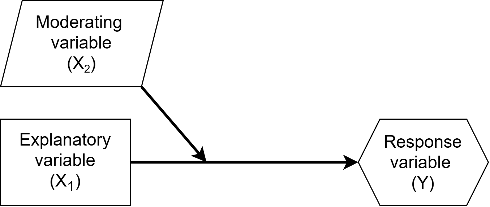

Multiple Linear Regression: Choosing your variables
The next natural questions are:
Multiple linear regression has 5 conditions:
Perfect collinearity = An \(X_j\) is a perfect linear combination of another
Cannot fit model mathematically so statistical software will drop at least one \(X\)
High collinearity = highly correlated \(X\)’s
Results in:
Remedy:
| Goal | Guiding question | General Approach |
|---|---|---|
| Prediction | Which model predicts new outcomes most accurately? | (next slide) |
| Inference | What is the primary relationship of interest? | Prespecify model using research question & subject-matter knowledge |
Selecting a model for prediction requires evaluating how well candidate models perform on new observations.
Prespecification of your model = deciding on your model before looking at the data
There are more types of relationships than just explanatory, response, and confounders

In study design our outcome of interest is our response variable, and our primary variable we think explains this variable is the explanatory variable.
Example: Sleep quality (\(X_{1}\)) affects academic achievement (\(Y\))

Example: Stressful home environment can affect sleep quality and academic achievement

Example: Sleep quality affects academic achievement through the mediator of alertness


Example: The relationship between sleep quality and academic achievement probably differs for children versus adults.
When it comes time for you to decide on a model on your own, there are many considerations. Your decisions should be informed by contextual knowledge, which would be available in real practice, but can often be difficult for classroom examples.